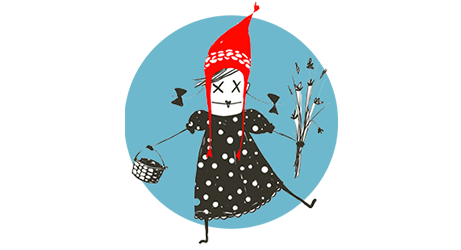

Léelo
- Biblioteca
- Cómo leer
- Índice

LA MODERNA CAPERUCITA

Capítulo 2


Esta web está preparada únicamente para dispositivos móviles. Abre la web con tu móvil o escanea el código QR para acceder a su contenido.
LA MODERNA CAPERUCITA
Capítulo 2